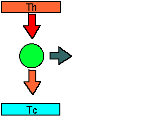
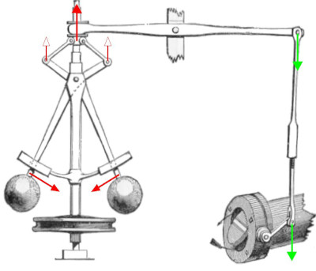
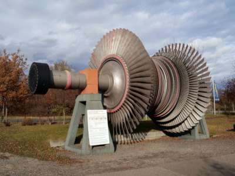
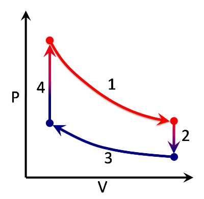

Màquines tèrmiques#
Pàgina en desenvolupament
Encara estem treballant en aquest document.
Esperem oferir-vos properament el seu contingut.
Disculpeu les molèsties.
Una màquina tèrmica agafa calor \(Q_H\) d’una font calenta a temperatura \(T_H\) i cedeix un calor \(Q_C\) a una font freda a temperatura \(T_C\) realitzant un treball útil \(W\)

La màquina fa un cicle que es repeteix i que podrem dibuixar a un gràfic p-V, o en un gràfic T-S, on S és la entropia, \(S=\frac{Q}{T}\)
Rendiment#
Pel primer principi:
\(W = Q_H-Q_C\)
\(\eta = \Large \frac{W}{Q_H}=\frac{Q_H-Q_C}{Q_H}=1-\frac{Q_C}{Q_H}\)
Més endavant, quan estudiem el Cicle de Carnot, veurem que en la pràctica aquest valor ve limitat pel rendiment de Carnot:
\(\eta < \eta _C = 1- \Large \frac{T_C}{T_H}\)
Cicles termodinàmics#
En aquesta animació podeu veure alguns dels cicles termodinàmics que estudiarem. Podeu veure que el rendiment està per sota del rendiment del cicle de Carnot. L’àrea interior del cicle és el treball realitzat.
Show code cell source
%%html
<iframe src="https://www.falstad.com/engine/" width=800 height="600"></iframe>
Màquines de vapor#
La revolució industrial està associada a la invenció de la màquina de vapor.
Si bé a l’antiga Grècia Heró d’Alexandria al seu tractat Pneumàtica descriu la primera turbina de reacció moguda per la força del vapor, van haver de passar 1700 anys per gaudir de les primeres màquines aplicades a la societat.
Amb raó els saxons anomenen a l’edat mitjana The dark ages.
La màquina de Savery (1698)#
La màquina de Savery utilitza una càmera que s’omple amb vapor d’aigua per a després produir el buit refredant la càmera amb aigua freda. Aquest buid permet xuclar aigua d’un pou, que després és elevada per la pròpia força del vapor que torna a omplir la càmera. La forma en què estava construïda no permetia un funcionament òptim, per la qual cosa el seu ús va ser molt limitat, especialment per treure el aigua de les mines. Però la seva patent, molt general i que bloquejava el desenvolupament de màquines de vapor semblants, va perjudicar a la màquina de Newcomen.
En aquest vídeo podeu veure un petit experiment on es veu el principi del seu funcionament:
Show code cell source
from IPython.display import YouTubeVideo
YouTubeVideo('T9ZeHMJt_14')
La màquina de Newcomen (1712)#
La gran aportació de Newcomen va ser la seva màquina de vapor, probablement desenvolupada al voltant de 1690, combinant les idees de Denis Papin i Thomas Savery. És probable que Newcomen conegués personalment Savery, els avantpassats del qual eren comerciants al Sud de Devon el 1712. Savery treballava com a funcionari en el Comissionat per mariners malalts i ferits, que el va portar fins a Dartmouth. Savery havia dissenyat una màquina, amb un sifó tèrmic, en el qual el vapor entrava en un contenidor buit i es condensava. El buit creat s’utilitzava per succionar l’aigua del fons de la mina. Aquesta màquina no era gaire efectiva i no podia treballar més enllà d’una profunditat de 30 peus. Newcomen va reemplaçar el recipient en el qual es condensava el vapor, per un cilindre que contenia un pistó. En lloc que el buit succionés l’aigua, el buit empenyia el pistó. El pistó empenyia l’extrem d’una llarga biga de fusta que estava ancorada en un fulcre central. L’altre extrem de la biga estava unit a una bomba d’aigua que arribava fins al fons de la mina. Quan el cilindre s’omplia de vapor, empenyia la biga, l’aigua entrava al cilindre de la bomba i era expulsada a través d’una canonada cap a la superfície. Newcomen i el seu company John Calley van construir una de les primeres màquines a Conygreen, a prop de Dudley, a West Midlands. Una rèplica d’aquesta màquina es troba al Black Country Living Museum.
Show code cell source
from IPython.display import YouTubeVideo
YouTubeVideo('oRPVhOKJUk0')
La màquina de Watt (1776)#
James Watt es proposà millorar la màquina de Newcomen, descobrint al llarg dels seus experiments, que el vapor era una reserva de calor molt més elevada que l’aigua i va comprendre que era necessari limitar totes les despeses en forma de calor que es produïen en la màquina de Newcomen, per disminuir el consum de combustible, que era un dels principals problemes d’aquestes màquines. Dels seus experiments en va treure una sèrie de conclusions, que el van portar a realitzar una patent el 1769.
Al principi els drets de patent eren de James Watt, i de John Roebuck, la persona que finançava els seus experiments. Però després de moltes dificultats econòmiques, Roebuck decidí transmetre els seus drets de patent a Matthew Boulton, que més tard construiria la firma «Boulton & Watt», que portà a la pràctica aquesta i altres invencions de Watt. La primera màquina amb condensador es construí el 1774 a Kinneil, prop de Boroughstoness.
Aquestes són algunes de les millores que va fer Watt i per això associem el seu nom al de la màquina de vapor:
Va separar la part calenta de la part freda de la màquina, introduint-hi el condensador. Només amb això i un foldre per a la part calenta va economitzar el 75% del combustible.
Va tancar l’extrem superior del cilindre, que era obert a la màquina de Newcomen.
Va convertir el cilindre en cilindre de doble efecte: l’aire ja no feia baixar el pistó, també ho feia el vapor.
Va convertir el moviment alternatiu en circular amb un sistema sistema solar-planetari.
va introduir un volant d’inèrcia per fer el moviment més regular.
Finalment va inventar el regulador de Watt, un dels sistemes de realimentació més importants, adoptat per totes les universitats politècniques i col·legis d’enginyers com a part del seu logotip.

Turbines de vapor (1884)#
Parsons va resoldre el problema de l’alta velocitat del vapor, que podia destruir qualsevol turbina clàssica, reduint la se va pressió i velocitat, en repartir en etapes la seva expansió

Podem modelitzar aquesta màquina amb un cicle de Rankine:


Show code cell source
from IPython.display import YouTubeVideo
YouTubeVideo('VbFFxtdLdxk')
Motor Stirling (1816)#
En el motor Stirling, un gas és escalfat i expandit per l’energia subministrada des de l’exterior del motor. A continuació, és redirigit a una ubicació diferent dins del motor, on es refreda i comprimeix. Un pistó (o pistons) mou el gas als llocs correctes dins del motor, en el moment adequat del cicle, i n’extreu energia mecànica. El gas oscil·la entre aquests espais de calefacció i refredament, canviant temperatura i pressió a mesura que avança. Una característica única és el regenerador, que actua com a emmagatzematge temporal de calor retenint-lo dins de la màquina en lloc de deixar-lo escapar al dipòsit de calor, augmentant així la seva eficiència.

Al cicle de Stirling podem apreciar:
Isoterma
Isocòrica
Isoterma
Isocòrica
També es pot utilitzar de forma reversible, com a bomba de calor. En aquest cas hem de recòrrer el cicle en sentit antihorari.
Motors de combustió interna#
Els automòbils, les motocicletes, els camions, els tractors… utilitzen com a màquines motrius màquines de combustió interna com ara els motors d’explosió o els motors diesel. Aquests motors realitzen el treball a partir d’una combustió que es produeix dins de la mateixa màquina. No els cal utilitzar un element intermedi, com ara el vapor, ja que són els mateixos gasos produïts per la combustió els que se n’encarreguen de fer el treball, gracies a la pressió que fan sobre el pistó o èmbol.
Aquestes màquines tenen elements comuns amb la màquina de vapor: el cilindre, el pistó o èmbol i el mecanisme biela-manovella. En canvi, no disposen de caldera: la combustió es produeix violentament dins el cilindre. Avui dia podem distingir dos tipus fonamentals de motors d’explosió: els motors d’encesa per guspira o de cicle Otto i els d’encesa per compressió o de cicle dièsel. Tant els uns com els altres poden ser de «quatre temps» (4T) com de «dos temps» (2T), tot i que els de dos temps dièsel no són gaire habituals.
Show code cell source
from IPython.display import YouTubeVideo
YouTubeVideo('8bQTsesutgY')
Motor d’Otto#
El cicle de Otto el trobem als cotxes de benzina. La benzina necessita guspires per iniciar la reacció, per tant aquest motor necessita bugies i es produeix un fron d’ona de la ignició.


Show code cell source
from IPython.display import YouTubeVideo
YouTubeVideo('6-udN4cZ6HU')
Al següent vídeo podeu veure el seu especejament:
Show code cell source
from IPython.display import YouTubeVideo
YouTubeVideo('Dy37bA0Gfjk')
També hi ha una versió de dos temps, amb els problemes medio-ambientals que implica. Per`té avantages com el pes i la possibilitat de girar a l’espai.

Show code cell source
from IPython.display import YouTubeVideo
YouTubeVideo('LuCUmQ9FxMU')
Motor Dièsel#
Al motor dièsel s’utilitza gas-oil com a combustible. El gasoil entra en ignició a alta temperatuta i pressió, sent un motor que no té escalfaments bruscos com el de benzina, ja que no eisteix un front d’ona (tot el volum del combustible reacciona a la vegada).

Show code cell source
from IPython.display import YouTubeVideo
YouTubeVideo('v4XNKDqKVt0')
Motor Wankel#
Es tracta d’un motor rotatiu en el que diferents temps es produeixen simultàniament.

Show code cell source
from IPython.display import YouTubeVideo
YouTubeVideo('3UlhneTyLIc')
Paràmetres dels motors de combustió interna.#
Dos són els paràmetres més comuns dels motors de combustió interna.

on \(d = 2r\) és el diàmetre del cilindre, \(s\) la cursa i \(V_c\) el volum de la cambra de combustió.
Cilindrada#
\(Cilindrada = \pi r^2 s ,\cdot nombre de cilindres\)
Relació de compressió#
\(RC = \Large \frac{\pi r^2 s + V_c}{V_c}\)
Turbines de gas#
Les turbines de gas es poden modlitzar amb el cicle de Brayton

Compressió adiabàtica
Absorció de calor isobàric
Expansió adiabàtica
Cesió de calor isobàric
Show code cell source
from IPython.display import YouTubeVideo
YouTubeVideo('p_A-YtwCGBE')
Show code cell source
from IPython.display import YouTubeVideo
YouTubeVideo('A6a_5cJQZJg')
Show code cell source
from IPython.display import YouTubeVideo
YouTubeVideo('JNkyn6X9rUk')
Aplicació a avions a reacció#
Show code cell source
from IPython.display import YouTubeVideo
YouTubeVideo('8Q0gDnC118o')
Aplicació a centrals de cicle combinat#
Show code cell source
from IPython.display import YouTubeVideo
YouTubeVideo('o6uM8HO_OYs')
Bombes de calor#
Moltes màquines tèrmiques es poden utilitzar de forma reversible. I moltes es poden modelitzar com un cicle de Carnot, com ara aquest refrigerador:
Show code cell source
from IPython.display import YouTubeVideo
YouTubeVideo('dH7FqsBtnSo')
COP#
Tenim molt clar que un rendiment és sempre inferior igual a 1. Com caracteritzem aquests sistemes, on el benefici \(Q_C\) és superior al treball \(W\) realitzat?
Es defineix el \(COP\) (Coefficient Of Perfomance) com \(COP_{AC} = \Large \frac{Q_C}{W}\) per a una nevera o aire condicionat que refreda.
Si utilitzem la bomba de calor per a escalfar, com és el cas d’un inverter , obtenim \(COP_{BC} = \Large \frac{Q_H}{W} = \frac{Q_C + W}{W} = \normalsize COP_{AC} +1 \)
Anàlogament a les màquines anteriors, aquest valor està limitat pel obtingut per a un cicle de Carnot \(COP_{AC} \le \Large \frac{T_C}{T_H-T_C}\)